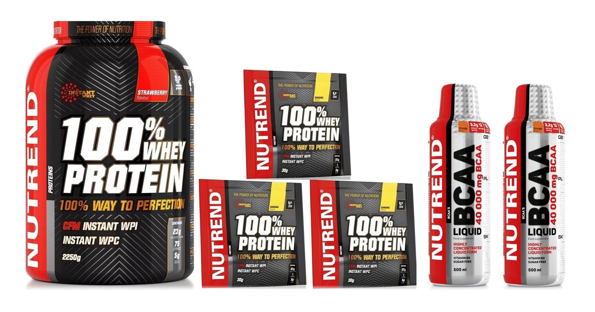

Suplementy
Suplementy pomáhají doplnit vitaminy, minerály nebo bílkoviny, které mohou chybět ve stravě. Lidé je často užívají pro lepší zdraví nebo sportovní výkon. Není to však náhrada pestré stravy. Správné dávkování je důležité, aby nedošlo k předávkování. Před užíváním je vhodné poradit se s odborníkem.
Některé suplementy, například vitamin D nebo omega-3, mají prokazatelné pozitivní účinky. Nevhodné nebo nekvalitní produkty však mohou škodit. Úspěch závisí i na zdravém životním stylu, ne jen na doplňcích. Důležité je vybírat ověřené značky a sledovat složení. Pokud se používají rozumně, mohou být užitečným doplňkem stravy.
